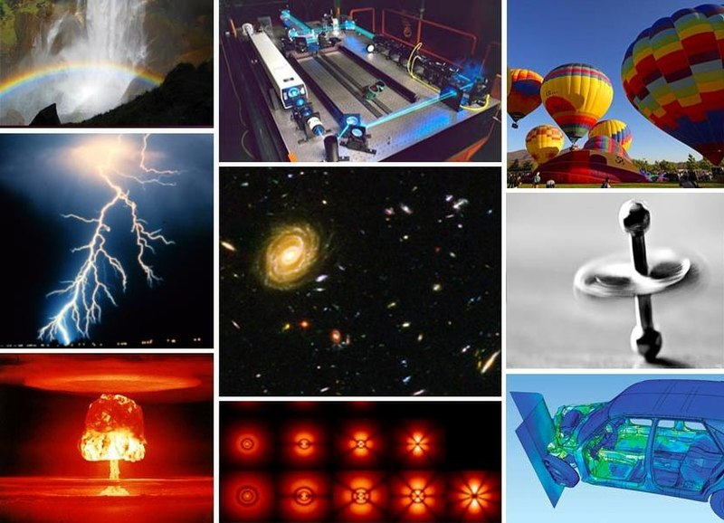
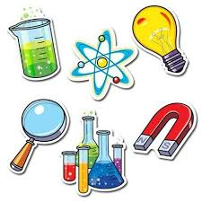
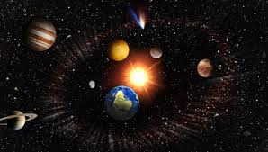
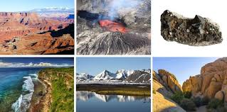
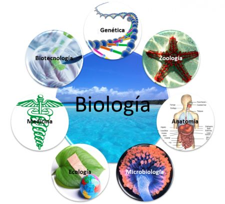

Las ciencias naturales, ciencias de la naturaleza, ciencias físico-naturales o ciencias experimentales (históricamente denominadas filosofía natural o historia natural) son aquellas ciencias que tienen por objetivo el estudio de la naturaleza, siguiendo la modalidad del método científico conocida como método empírico-analítico.Las ciencias naturales se apoyan en el razonamiento lógico y el aparato metodológico de las ciencias formales, especialmente de la matemática y la lógica, cuya relación con la realidad de la naturaleza es indirecta. A diferencia de las ciencias aplicadas, las ciencias naturales son parte de la ciencia básica, pero tienen en ellas sus desarrollos prácticos, e interactúan con ellas y con el sistema productivo en los sistemas denominados de investigación y desarrollo o investigación, desarrollo e innovación (I+D e I+D+I).
- Física
inicio
es la ciencia natural que estudia la naturaleza de los componentes y fenómenos más fundamentales del Universo como lo son la energía, la materia, la fuerza, el movimiento, el espacio-tiempo, las magnitudes y propiedades naturales fundamentales y las interacciones fundamentales.

- Química
inicio
La química es la ciencia natural que estudia y analiza la composición, estructura y propiedades de la materia, ya sea en forma de elementos, especies, compuestos, mezclas u otras sustancias, así como los cambios que estas experimentan durante las reacciones y su relación con la energía química.

- Astronomía
inicio
La astronomía (del griego άστρον [ástron] 'estrella' y νομία [nomía] 'normas', 'leyes de las estrellas') es la ciencia natural que estudia los cuerpos celestes del universo, incluidos las estrellas, los planetas, sus satélites naturales, los asteroides, cometas y meteoroides, la materia interestelar, las nebulosas, la materia oscura, las galaxias y demás.

- Geología
inicio
La geología (del griego γῆ /guê/, 'Tierra', y -λογία /-loguía/, 'tratado') es la ciencia natural que estudia la composición y estructura tanto interna como superficial del planeta Tierra, y los procesos por los cuales ha ido evolucionando a lo largo del tiempo geológico.

- Biología
inicio
La biología (del griego βίος [bíos] «vida», y -λογία [-logía] «tratado», «estudio» o «ciencia») es la ciencia natural que estudia todo lo relacionado con la vida y lo orgánico, incluyendo los procesos, sistemas, funciones, mecanismos u otros.
